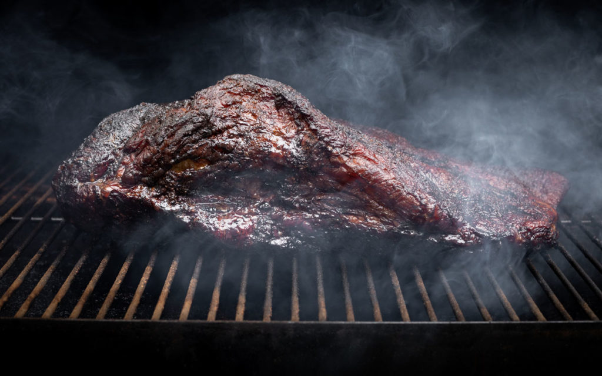

Jamaican Jerk Brisket

Tender Slow Smoked Tangy Sweet Spicy Jamaican Jerk Brisket
Jerk brisket isn't really Jamaican. But this electrifying jerk brisket recipe will definitely make you sit up and take notice.
jerk seasoning—that ferociously fire-y blend of Scotch bonnet chiles, allspice, nutmeg, soy sauce, salt, garlic, rum, and other seasonings—works wonders with the beefy richness of brisket. And Jamaicans prize the flavor of wood smoke as much as any Texan.
Ingredients (4 servings):
- 1 packer brisket (12 to 14 pounds)
- 3 cups jerk seasoning, homemade or your favorite commercial brand
- 5 pimento leaves or bay leaves
- 2 tablespoons allspice berries (preferably Jamaican)
- Buttered toasted brioche rolls or hamburger buns (optional), for serving
Cooking Steps
- Using a sharp knife, trim the brisket, leaving a layer of fat at least 1/4 inch thick. Be careful not to over-trim. It’s better to err on the side of too much fat than too little. Make a series of 1⁄2-inch-deep cuts on all sides of the meat using the tip of a paring knife, twisting the blade to widen the holes. (This helps with the absorption of the jerk seasoning.)
- Using a rubber spatula, slather the brisket with jerk seasoning on all sides. Force it into the holes you made with the paring knife. Marinate, covered, in the refrigerator for at least 6 hours or overnight— the longer it marinates, the richer the flavor.
- Fire up your smoker, cooker, or grill following the manufacturer's instructions and heat to 250°F. Add the wood as specified by the manufacturer. If using a water smoker, add the pimento leaves and allspice berries to the water pan. Otherwise, place these flavorings in a metal bowl or aluminum foil pan with 1 quart warm water and place the bowl in the smoker.
- Scrape the excess jerk marinade off the brisket with a spatula. Place the brisket fat side up in the smoker. If using an offset smoker, position the thicker end toward the firebox. Cook the brisket until the outside is darkly browned and the internal temperature registers about 165°F on an instant-read thermometer, about 8 hours. Refuel your cooker as needed, following the manufacturer’s instructions.
- Remove the brisket from the smoker and tightly wrap it in butcher paper. Return it to the cooker.
- Continue cooking until the internal temperature is around 205°F and the meat is very tender when tested, another 2 to 4 hours, or as needed.
- Place the wrapped jerk brisket in an insulated cooler and let it rest for 1 to 2 hours. (This allows the meat to relax and its juices to redistribute.)
- Unwrap the brisket and transfer it to a welled cutting board. Pour any juices that accumulated in the butcher paper into a bowl. Slice the brisket across the grain into 1⁄4-inch-thick slices. Layer the slices onto the toasted rolls,
if desired. Add any juices from the cutting board to the juices in the bowl, spoon them over the meat, and serve.